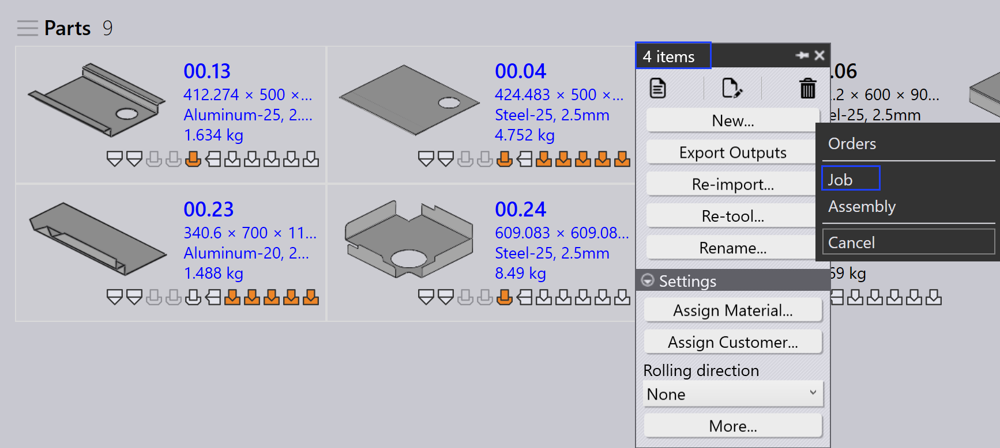
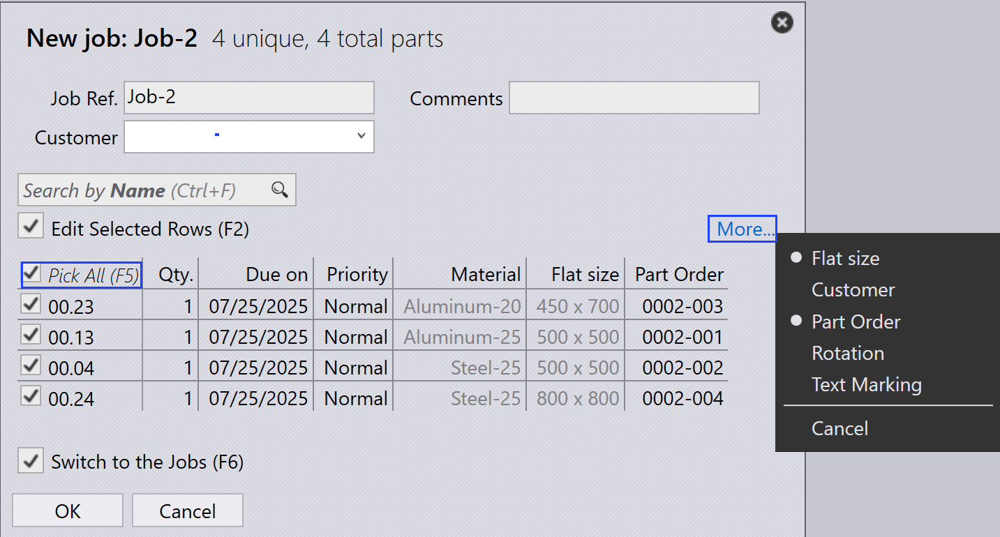

Crea commessa
Le commesse vengono utilizzate per acquisire e tracciare gli ordini dei clienti. Tipicamente, una commessa contiene una raccolta di parti con quantità, date di scadenza, priorità e ordine delle parti variabili.
Nuove commesse possono essere create nei seguenti modi:
-
Da parti esistenti nella libreria parti.
-
Trascinando parti direttamente nella pagina Commesse e fornendo manualmente i parametri della commessa.
-
Da assiemi.
-
Selezionare alcune parti dalla libreria parti e fare clic con il pulsante destro del mouse per aprire il pannello parte.
-
Fare clic su Nuovo… → Job. Si apre la finestra nuovo job.

-
Nella finestra New Job:

-
Inserire i campi obbligatori della commessa: Job Reference, Cliente e Commenti.
-
Fare clic su Altro… per accedere a campi aggiuntivi come Cliente, Rotazione e Marcatura testo, se necessario.
-
Abilitare Preleva tutti (F5)] per aggiornare tutte le parti selezionate quando se ne modifica una. Utilizzare questa opzione per modificare la quantità delle parti, la data di scadenza, la priorità, ecc.
-
Fare clic su OK dopo aver inserito tutti i dettagli della commessa.
-
-
Se Passa ai lavori (F6) è selezionato, il sistema passerà alla pagina Commesse e la commessa verrà creata automaticamente.

-
È inoltre possibile importare una commessa utilizzando uno dei seguenti metodi:
-
Importazione da un file di testo.
-
Importazione da fogli di calcolo (formato CSV o XLSX).
-
Utilizzo di una cartella monitorata.
-
Per ulteriori informazioni, consultare il capitolo seguente.